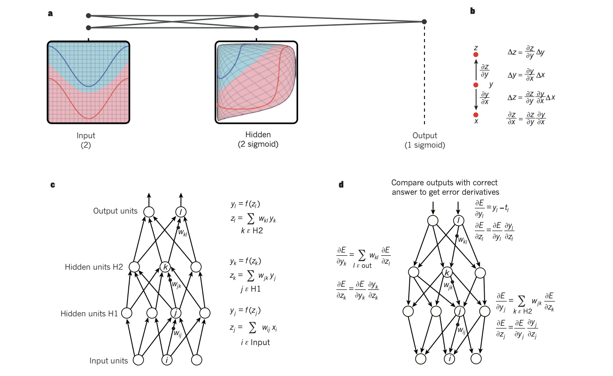
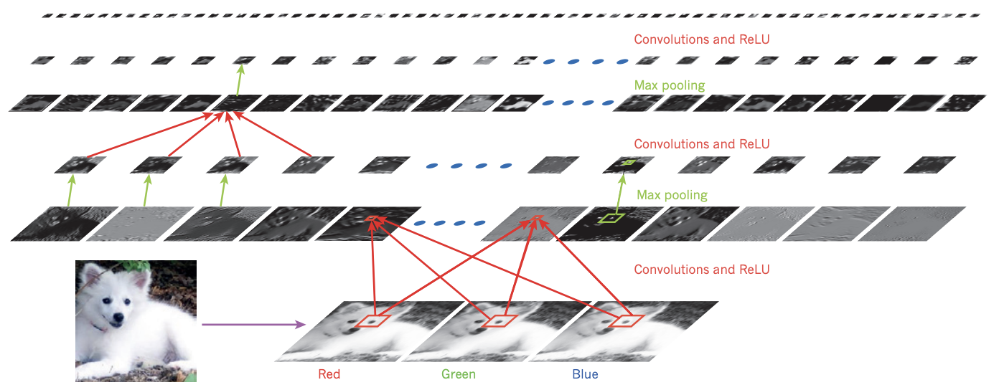
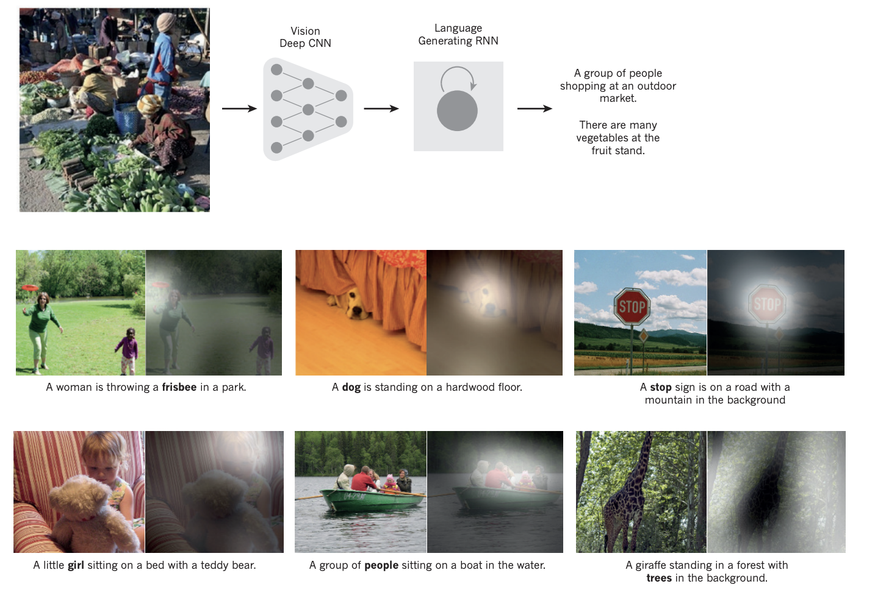

原文链接
为纪念人工智能提出60周年，Yann LeCun、Geoffrey Hinton和Yoshua Bengio首次合作了这篇综述文章“Deep Learning”,该文章是深度学习三驾马车共同撰写的深度学习综述性文章，发表于Nature。
引言
深度学习可以使具有多个处理层的计算模型实现对多层次抽取的数据表征的学习,显著提升了包括语音识别、视觉目标识别、目标检测等多个领域的极限性能。深度学习能够发现数据中的复杂结构，利用反向传播算指导机器如何从前一层网络计算表征，从而改变每一层的内部参数。
深度学习是一种表征学习（Representation learning）方法。把原始数据通过一些简单非线性的多层次表征模型转变成为更高层次的，更加抽象的表达。通过足够多这样的转换组合，可以学习很复杂的函数。这些多层结构中的特征不是工程师手工设计的，而是通过从数据中学习的。
监督学习
该部分描述了深度学习实现有监督类学习的过程：例如建立一个系统对图像进行分类：
1）收集大量数据集，标注图像中的目标；
2）构建深度学习网络，以向量的形式表示学习到的内容；
3）计算一个目标函数，衡量类别的输出分数和期望分数之间的误差（或距离）；
4）通过自动修改内部的可调节的参数（通常被称为权值），优化网络性能；
5）大部分从业者都使用一种叫做随机梯度下降（SGD）的算法进行权值调节，相比于其他优化技术，SGD的速度让人惊奇;
6）训练结束后，再通过不同于优化训练的数据样本测试系统的泛化能力，即对于未训练过的新样本的识别能力。
反向传播算法

图a：多层神经网络对输入空间整合，使得数据线性可分；
图b：链式法则推导过程，展示了x和y的两个微小变化是如何组合在一起的
图c：具有两个隐层和一个输出层的神经网络的前向传播过程
图d：对比输出与正确答案的误差之后，神经网络的反向传播过程
反向传播算法的核心算法是用链式求导法则，即目标函数对于输出层的导数（或梯度），通过该层向前一层求导实现，如此递延一直传递到第一层（输入层）。最后将特征传递给一个非线性激活函数，可以得到分类的结果。当前最流行的非线性激活函数是ReLU，比起之前流行的tanh和sigmoid激活函数，ReLU的学习速度更快，可以让深度网络直接进行学习，而不需要做预训练（pre-train）。
反向传播方法其实在20世纪80年代就易用被用到多层网络的训练之中，即随机梯度下降算法。但是直到2009年前后才被重新广泛使用，这中间主要有两个问题的突破。
一个是人们当时普遍认为反向传播算法使用的梯度下降会使整个优化陷入局部极小困境，但实践中发现，系统并没有出现局部极小问题，而是总能够得到差不多的解，尤其是在数据量很大的时候。
二是GPU的出现，使得训练过程得到了10倍或20倍的加速。
卷积神经网络 CNN
卷积神经网络的4个关键想法
局部连接：每一层图像的局部块，被一个叫做卷积的滤波器权值映射到特征图中；
权值共享：每一层的特征图使用的过滤器是相同的，不同层使用不同的滤波器；
池化：卷积层的作用是探测上一层特征的局部连接，然而池化层的作用是在语义上把相似的特征合并起来，池化操作让这些特征对各种变化具有更好的鲁棒性；
多层网络的使用：通过多层网络实现对低级特征的组合，转换为高级的特征。
Question:数学上已经证明单层的神经网络可以表示任何函数，那么为什么不使用全联接网络而使用人为设计的复杂的CNN网络呢？
原因在于CNN可以大量地减少参数，提高效率，降低计算复杂度。

深度网络与传统机器学习的重要区别：
传统机器学习做分类的时候需要大量的先验经验和领域知识对分类特征进行设计，但是又很难保证特征的泛化能力。而深度学习可以通过网络来拟合特征可以避免这种问题，因为深度学习通过多层结构从原始数据中得到的特征可以同时提高特征的区分选择性和特征不变形，而且可微小细节的特征进行区分，如从白色的狼中区分出萨摩耶犬，同时忽略背景、亮度、姿势等特征。
基于卷积神经网络的图片理解

卷积神经网络提取图片中的信息，经过RNN进行训练，将图片的高级表示翻译成字幕。卷积网络中的卷积和池化层灵感来源于视觉神经科学中的简单细胞和复杂细胞。
分布表示和语言模型
理解Embedding：
1）one-hot Embedding
2）n-gram（SVD分解）
3）word/sentence Embedding（CBOW、Skip-gram、Glove）
4）ELMO、GPT、BERT、GPT-2、XLNet
深度学习使用分布式特征表示（distributed representations），与传统学习算法相比具有两个极大的优势：
1）分布式特征表示能够很好的泛化能力，以适应新学习到的特征值组合；
2）深度网络的组合多层进行表示，可以更加容易的预测目标输出。
这种特性的一个经典场景就是语言处理，比如将本地文本的内容作为输入，训练神经网络来预测句子的下一个单词。传统方法是基于逻辑启发的，用符号表示实体，再用逻辑进行推理，这就需要对推理规则进行大量的手工设计，工作量巨大。而深度学习是基于神经网络的认知，可以利用大量的活动载体、权值矩阵和标量的非线性和，建立语义的向量空间，实现简单容易、具有“直觉”推理能力的语言处理效果。
循环神经网络 RNN
RNN可以简单理解为带有存储功能的神经网络，主要特点有：
1）RNN在每个时间点连接参数值，参数只有一份
2）神经网络除了输入以外，还会建立在以前“记忆”的基础上
3）内存的要求与输入规模相关
LSTM是长短记忆网络，是一种特殊的门限RNN，主要为了解决长序列训练过程中的梯度消失和梯度爆炸的问题。核心概念有Memory Cell, Forget Gate, Input Gate, Output Gate.
深度学习的未来
1）无监督学习
2）强化学习
强化学习并不需要出现正确的输入/标签对数据，它更专注于在线规划，需要在探索（未知领域）和遵从（现有知识）之间找到平衡，其学习过程是智能体不断的和环境进行交互，不断进行试错的反复练习过程。
强化学习不同于监督学习在于其中没有监督者，只有一个奖励信号，并且反馈是延时的，不是立即生成的，因此时间序列在强化学习中具有重要的意义。
3）GAN
Generative Adversarial Networks,生成对抗网络,它的核心思想来源于博弈论和纳什均衡，它规定参与游戏的双方有一个生成器Generator和一个鉴别器Discriminator。生成器尽可能地去学习真实的数据分布，而鉴别器则尽可能的去判别数据是否来自真实的数据分布。为了取得游戏的胜利，两个游戏的参与者需要不断提高自己的生成或判别能力，这个学习优化的过程就是寻找二者之间的纳什均衡。
4）自监督学习 Self Supervised Learning
简而言之，一切都在预测。现在预测未来，部分预测整体，整体预测部分，未来预测现在。如BERT。